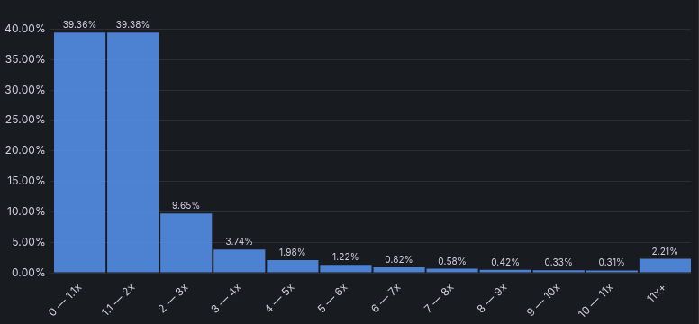
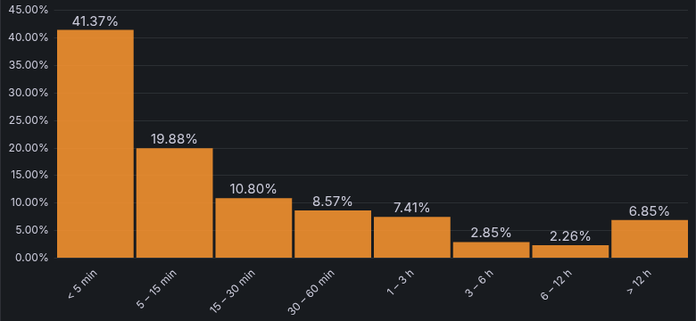
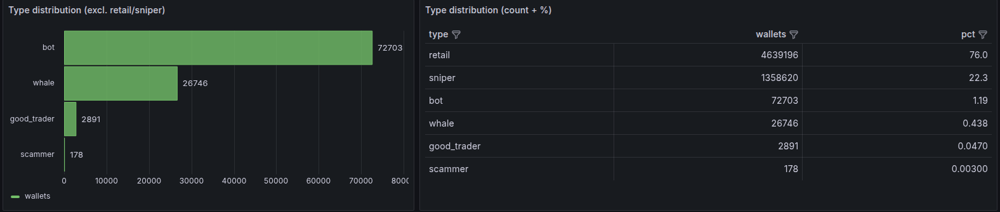

Аналитик данных: 1,5 года в команде торгового бота — ClickHouse и PostgreSQL, 35 панелей в Grafana, анализ рынка и проверка гипотез. Мои выводы меняли решения о людях и деньгах: обосновала перевод двух команд на один продукт, нашла ошибку выжившего в оценке стратегии. Совмещала аналитику с руководством командой до 5 человек — понимаю задачу бизнеса и ясно объясняю выводы. Ищу позицию Data Analyst или Product Analyst.
Минск · удалённо, гибрид, офис · готова к релокации и командировкам английский B1 (Intermediate), сейчас целенаправленно подтягиваю до B2
~100 тыс. заказов · 9 связанных таблиц · PostgreSQL · CTE, оконные функции · весь SQL написан вручную
ВопросПочему покупатели бразильского маркетплейса почти не возвращаются и что в этом зависит от доставки, продавцов и регионов.
ДанныеСпроектировала схему с ключами и нашла проблемы качества: неуникальный ID отзывов, неполный справочник категорий, доставленные заказы без даты доставки, обрыв выгрузки и корзины, раздробленные на несколько заказов. Каждую цифру проверяла вторым способом.
Средняя оценка заказа
по исходу доставки, шкала 1–5, ~96 тыс. отзывов
вовремя
4,29
опоздал
2,27
не доставлен
1,76
Опоздание отнимает 2 балла. А опоздания определяет запас в обещанном сроке по регионам, а не расстояние.
таблица значений
вовремя
4,29
опоздал
2,27
не доставлен
1,76
Выручка по месяцам
доставленные заказы, товар + доставка, млн реалов
Январь–август 2018 — 8,45 млн против 3,47 млн годом раньше: рост в 2,4 раза. Пик — ноябрь 2017, Black Friday.
таблица значений
январь 2017
0,13 млн
февраль 2017
0,27 млн
март 2017
0,41 млн
апрель 2017
0,39 млн
май 2017
0,57 млн
июнь 2017
0,49 млн
июль 2017
0,57 млн
август 2017
0,65 млн
сентябрь 2017
0,70 млн
октябрь 2017
0,75 млн
ноябрь 2017
1,15 млн
декабрь 2017
0,84 млн
январь 2018
1,08 млн
февраль 2018
0,97 млн
март 2018
1,12 млн
апрель 2018
1,13 млн
май 2018
1,13 млн
июнь 2018
1,01 млн
июль 2018
1,03 млн
август 2018
0,99 млн
НашлаДоставка из своего штата в 2 раза быстрее (7,9 против 15,0 дня), но в четырёх штатах Северо-Востока и Севера нет ни одного продавца. Настоящий repeat rate — 2,85%, а не 3,1%; опоздание первого заказа снижает повторные покупки примерно на 18%, но и при доставке вовремя возвращаются меньше 3% — удержание не только про логистику. Двойной подсчёт при JOIN завышал выручку на 4–34%. В компьютерах один продавец делает 75% выручки категории из 9 — уйдёт он, и категория обвалится.
ПредложилаПересчитать обещанный срок доставки по регионам; привлекать местных продавцов на Северо-Востоке; считать повторные покупки по моментам покупки, а не по заказам.
116 стран · Беларусь по областям · 50 штатов США · 200+ исследований
ВопросГде и почему разводятся чаще — и как объяснить это обычным людям коротко и с доказательствами.
СделалаСобрала свежие данные статслужб за 2024–2025 годы (Белстат, Eurostat, US Census, CDC, Всемирный банк, ВОЗ), посчитала риск развода по стажу брака для двух десятков стран Европы, корреляции и цепочки причин, сделала картограммы и интерактивную страницу.
НашлаВ Беларуси — 67 разводов на 100 свадеб. Опаснее всего 2–6-й год брака, но половина разводов случается позже 12 лет. «Протестантизм сохраняет брак» — миф: защищает личная религиозность, а не конфессия страны.
Когорты и retention на Olist (SQL) · статистика и A/B-тесты в Python: размер выборки, t-test, bootstrap · iGaming: FTD, GGR, LTV по когортам и A/B-тест бонуса · Power BI-дашборд по Olist.
Опыт
Сначала работа с данными, ниже — предыдущий опыт коротко.
BCH Labs: аналитик данных и тимлид проекта
1 год 6 мес · 04.2025 — 09.2026
торговый бот на блокчейне Solana · поток транзакций и история за месяцы торгов · ClickHouse (кластер с шардированием), PostgreSQL, Python, Grafana · подчинялась основателю, вела команду до 5 человек: найм, роадмап, приоритизация
Выбор продукта для фокуса команды
Финансирование было ограничено, а две команды параллельно делали два бота. Нужно было решить, во что вкладывать людей.
Сравнила арбитражный и копитрейдинг-бот по PnL торговых сессий в Grafana, стоимости команд и анализу рынка: арбитраж полтора года упирался в гонку за миллисекунды, копитрейдинг от скорости не зависел
Показала анализ основателю и обосновала свести две команды в одну: затраты на команду сократились, запас работы вырос, через месяц были проверенные результаты живых сессий
Хранилище и витрины
Команде нужна была единая история, на которой воспроизводимо считаются признаки и бэктесты.
Вела структуру таблиц, загрузку сырых транзакций в таблицы событий и дозагрузку пропущенных периодов (ETL); писала миграции и DDL
Нашла потерю 6% событий: сравнение количества строк её не показывало, сверка по ключам с исходной таблицей (anti-join) — показала; описала причину в парсере
Дашборды
Результаты торговли и состояние рынка нужно было видеть без ручных выгрузок.
Три дашборда в Grafana, 35 панелей: анализ торговой сессии, симуляция торговли, здоровье рынка — все метрики считаются SQL-запросами, конфигурация через API
Заменила пять противоречивых метрик прибыли одной — чистым денежным потоком; медиана вместо среднего, порог по размеру выборки, чтобы команда не делала выводов на трёх сделках
После перехода на распределённую базу вернула данные в 28 панелей и проверила по числу строк, что ни одна не теряет данные молча
Анализ рынка мемкойнов
Оценить размер рынка и потолок заработка бота для решения о финансировании.
Собрала данные рынка за год из независимого источника (Dune): 30 тыс. новых токенов, 213 тыс. покупателей и 882 листинга в день (2,9%)
Пересчитала recall модели на реальный знаменатель — 0,45% вместо 2% — и юнит-экономику бота: доход против расходов команды, точка безубыточности
Падение рынка в июле 2025 года оказалось уходом пользователей к конкуренту, а метрика 103,5% — ошибкой в числителе
Насколько вырастает цена токена
максимальный рост от цены запуска, ~2 млн токенов, 17 апреля — 4 июля 2026

79% токенов не вырастают даже вдвое; в 11 раз и больше — 2,2%. Рынок — лотерея с длинным хвостом.
За сколько токен доходит до листинга
время от запуска до листинга на бирже, токены-выпускники

41% выпускников доходят до листинга быстрее чем за 5 минут — на решение у бота считанные секунды.
Панели из дашборда «Здоровье рынка», который я собрала в Grafana в BCH Labs; данные — публичные транзакции блокчейна Solana.
Классификация пользователей
Найти кошельки, чьи сделки имеет смысл копировать.
SQL-пайплайн из 12 шагов: прибыль по токенам, выявление ботов, статистика, классификация, пороговые фильтры, граф переводов
Нашла ложное срабатывание правила «бот» и вернула в выборку 163 сильных трейдера (+14%); участвовала в обучении моделей LightGBM
Сверка разметки с внешним API — 0,5% расхождений
На какие типы делятся 6,1 млн кошельков
разметка за эпохи 959–990; слева — типы без обычных пользователей и снайперов, справа — все типы с долями

Кого стоит копировать — 2 891 кошелёк, 0,05%. Сегмент узкий, поэтому каждое правило отбора проверяла на данных: одно ложное срабатывание вырезало 163 сильных трейдера.
Чем сильные трейдеры отличаются от обычных
средние по типу; 2 891 сильный трейдер против 4,6 млн обычных кошельков
признак
сильные
обычные
доля сделок в плюс
40,7%
13,0%
реализованная прибыль, SOL
+29,4
−0,37
закрывают позицию полностью
94%
0,7%
плата за приоритет исполнения
в ~230 раз выше
—
Сильные трейдеры отличаются не удачей, а дисциплиной: доводят сделку до конца и платят за скорость.
Проверка гипотез
A/B/C/D-тест параметров исполнения и форвард-тест на 9 торговых сессиях (~780 сделок)
Нашла ошибку выжившего: стратегия показывала +27% по закрытым сделкам и −1,8% по всем покупкам; стоп-лосс, который собирались добавить, на данных ухудшал результат
Четыре гипотезы роста доходности закрыты количественно — до вложений в разработку
Управление командой
Параллельно вела команду до 5 человек: роадмап и приоритизация под цель, недельные спринты с целями по результату, дейлики и ретро, бюджет через трекинг часов по каждому исполнителю, найм трёх ролей полным циклом.
Картографическое предприятие: картограф-редактор
1 год 8 мес · 08.2023 — 04.2025
Работа с геоданными: контроль точности и согласованности, вычитка картографической продукции перед выпуском.
Ранее: бизнес-ассистент руководителей и преподавание
2016 — 2025
2023—2025 — бизнес-ассистент основателя студии премиального ремонта ETICO.BY: сметы, закупки, люди, платежи.
2022—2023 — преподаватель картографических дисциплин, БГУ.
2016—2019 — ассистент руководителя онлайн-школы CT-EXPRESS: школа выросла с одного предмета до трёх.
Навыки
Шесть групп задач аналитика — от вопроса заказчика до вывода.
SQL
PostgreSQL и ClickHouse: JOIN и anti-join, подзапросы, EXISTS, CTE, оконные функции (ROW_NUMBER, RANK, LAG, нарастающие итоги), миграции и DDL. Проверяю результат вторым способом и ловлю размножение строк.
Метрики и исследования
Repeat rate, доли и конверсии с правильным знаменателем, когорты, воронка и юнит-экономика, медиана против среднего. Перед расчётом уточняю определение метрики — от него зависит ответ.
Качество данных
Дубликаты и неуникальные ключи, неполные справочники, пустые даты, край выгрузки и ошибка выжившего. Находки фиксирую и учитываю в выводах.
Дашборды
Grafana: панели на SQL, конфигурация через API. Одна проверенная метрика вместо нескольких противоречивых, метрики в реальном времени вместо ручных выгрузок.
Python и эксперименты
pandas, numpy, LightGBM. Код и автоматизацию делаю с Claude Code и Cursor: ставлю требования, выбираю метрики, проверяю результат. Эксперименты: A/B/C/D-тест параметров исполнения, форвард-тест на новых данных, permutation test против случайного результата.
Работа с заказчиком
Опыт бизнес-ассистента руководителей и тимлида: перевожу бизнес-вопрос в задачу на данных, договариваюсь о сроках, объясняю результат без жаргона. Документация в Notion.
Образование и курсы
Профильное образование — географическое, с математической обработкой измерений. Аналитику добирала курсом и практикой.
Аналитик данных с нуля
июль 2026 · BELHARD
12 занятий, онлайн · сертификат об окончании, июль 2026
SQL: JOIN, агрегации, подзапросы и CTE, оконные функции, retention и скользящие средние. Статистика, проверка гипотез и A/B-тесты. Python для анализа и визуализации. Дашборды в BI и ИИ в аналитических задачах.
Магистр географических наук
2017 — 2023 · БГУ
факультет географии и геоинформатики, кафедра геодезии и космоаэрокартографии
Картографо-геодезическая деятельность, специалист; магистратура — землеустройство, кадастры, геодезия, картография, геоматика. С второго курса занималась наукой: исследование способов изображения плотности населения Беларуси. Председатель жилищно-бытовой комиссии профкома факультета — документооборот, база данных, заселение и распределение студентов.
Резюме
Резюме аналитика данных: русская и английская версии, PDF, одна страница.
Data Analyst
SQL в PostgreSQL и ClickHouse, Python, дашборды, хранилище и витрины, анализ рынка, проверка гипотез. Pet-проект на данных маркетплейса Olist.
Два эпизода, которые объясняют, как я учусь новому, и отзывы руководителей.
Rust с нуляПришла в блокчейн-разработку из картографии и выучила язык, на котором пишет команда. Мне мало вести календарь проекта: я разбираюсь в предмете, поэтому вижу, из чего состоит задача.
19 → 91 балл на ЦТ за годПодняла результат по русскому и поступила в ведущий вуз страны. Разрыв закрыла дисциплиной и режимом — так же закрываю задачи, к которым не было готового навыка.
«К каждой задаче ты относилась очень ответственно и серьёзно. Часто серьёзнее и ответственнее, чем я сам. Глубоко изучала всю информацию, делала отличную подготовку. Изучала инструменты глубже, чем я знаю их сам, чтобы результат был лучше, чем я ожидал. Мне не хватало технических знаний — ты же их осваивала и применяла, что очень ценно. Работой с тобой я очень сильно доволен и буду в будущем точно под некоторые задачи к тебе обращаться.»
Руководитель проектаинфобизнес
«Почему каждый месяц ты выбираешь работать со мной? Я продолжаю работать, так как знаю, что ты очень редкий человек, с которым мне комфортно, и я знаю, что за этими "рамками", как ты говоришь, есть большое количество черт: честность, вежливость, готовность помочь, развитие, цели, дисциплина, выдержка границ личного пространства и уважение друг друга. И в работе ты очень хороший коллега, на которого можно действительно положиться и доверить. Знаю, что ты доведёшь некоторые задачи, порой очень сложные, без меня и без ответов, которые тебе очень нужны.»
Основатель студии ETICO.BYпремиальный ремонт · 22 декабря 2024